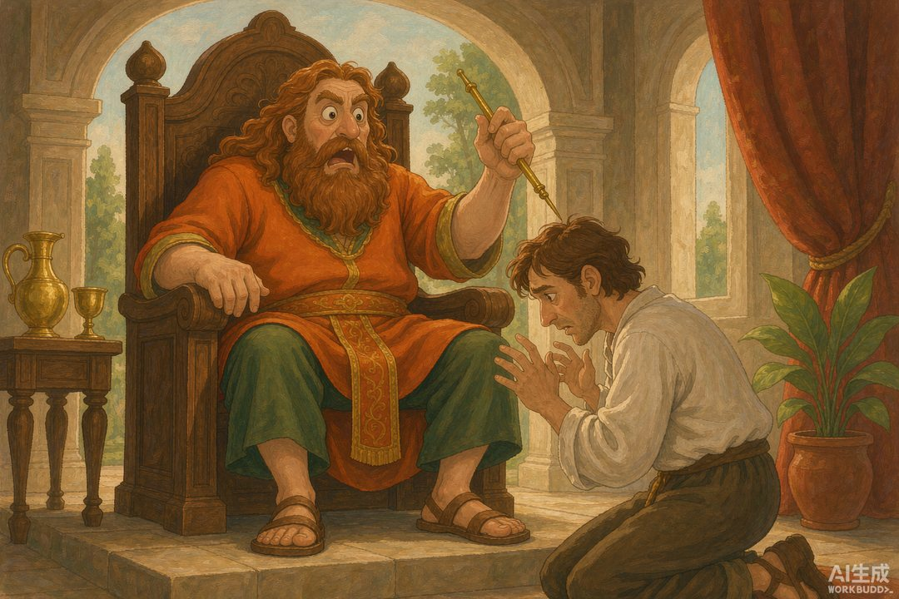

|
信息传播那些事儿 · 卷一 信息的黎明 · 第12篇 |
|
信使的生死：带消息的人，就是消息本身 —— 在电报出现之前，送信就是一场玩命的差事 |
|
上回我们说，谣言靠嘴传，正经消息靠人跑。可那个跑腿送信的人，常常死得比消息还快。古人有句老话叫"别迁怒送信的"——因为历史上，送信的真的会被杀。今天这篇，就聊聊信使这个高危职业，以及它背后那句冷冰冰的道理：带消息的人，等于消息本身。 |
在电报发明之前，信息有个绕不开的物理限制：它自己不会飞。
你想把一句话从 A 城送到 B 城，唯一的办法，是让一个活人，把这句话装进脑子（或卷进帛书），用脚走过去。于是"信息"和"人"被死死绑在了一起——人到了，消息才到；人没了，消息也断在半路。
这条规律，我叫它"信道即风险"。而信道的载体，是个会流血、会累死、会被杀的人。
一 | 希腊的"日行信使"：一个人扛到底 |
古希腊负责送信的人，叫 hemerodromos，直译"日行信使"。他们装备轻便，跑得极快——史料记载一小时能跑约十公里。但希腊有个硬规矩：一个信使，从起点一路跑到终点，中间不换人。
这跟波斯后来搞的"接力换马"完全不同。接力制把风险摊薄到很多人身上；希腊这种"一人扛到底"，风险全压在单独一个人头上。他要是半路被劫、累垮、或者赶到时正好撞上坏消息的雷区——消息和人，一起没了。
马拉松那位菲迪皮德斯（我们在第 05 篇讲过），就是这么一位：一路狂奔把捷报送到，说完话，人就没了。荣誉很高，命很脆。
▲ 一个人，一条命，一份消息（AI 生成示意图）
二 | 信使的生死簿：历史上真有人被杀 |
"杀信使"不是比喻，是实打实发生过的事。随便翻几页历史：
• 亚美尼亚王 Tigranes（约公元前 69 年）：罗马军团打来了，第一个报信的被他砍了头；第二个来报"我军已经溃败"的，被锯死。普鲁塔克在《卢库卢斯传》里写得很清楚——大王用杀信使，把自己的耳朵也封死了。
• 伊利里亚女王 Teuta（公元前 229–228 年）：她处死了罗马使节科伦卡尼乌斯，理由是这人抗议她纵容海盗。结果罗马直接掀桌，打响了第一次伊利里亚战争。
• 圣经里的扫罗之死：大卫王下令，杀掉那个自称"我亲手杀了扫罗"来报功的亚玛力人——带坏消息的人，成了替罪羊。
但诡异的是，另一面，使节又被视为"神圣不可侵犯"。希腊人认为，伤害信使就是冒犯宙斯和赫尔墨斯，会招来世代诅咒。当年雅典和斯巴达把波斯使节扔进井里（公元前 491 年），事后怕得要命，赶紧派自己人去波斯谢罪赎罪。
你看，信使的命，两头都悬着：敌方的刀可能落下来，己方暴君的刀也可能落下来。他是信息的人肉载体，载体一碎，信息也跟着碎——或者，坏消息太刺耳，载体被当成消息本身，一起被消灭。

▲ 带来坏消息的信使，常常先挨刀（AI 生成示意图）
|
数字锚点 · 几个"被杀的信使"名场面 | |||||
信使的命，悬在"敌方之刀"与"己方暴君之刀"之间；载体即信息，载体碎，信息也碎。 |
三 | "杀信使"是种心理：迁怒 |
英语里那句 "Don't shoot the messenger"（别迁怒送信的），说的就是这种心理。
人接到坏消息，第一反应常常不是"这消息对不对、该怎么办"，而是"谁告诉我的、弄死他"。坏消息太痛，痛到想把带来痛的人一起消灭。在古人脑子里，根本没有"载体 ≠ 内容"这个概念——信使站在你面前，信使就是坏消息本身。
这跟我们上一篇讲的"谣言为谁服务"是同一枚硬币的两面：上一回，人们转发谣言是为了服务自己的情绪；这一回，人们杀信使，是因为承受不了情绪，把载体当替罪羊。信息的载体，从古到今都是最脆弱的那一环。
▲ 希腊 hemerodromos：一人从起点跑到终点（AI 生成示意图）
四 | 回到四问：谁在生产？ |
说到这儿，本篇要点的那句话就出来了。
在漫长历史里，信息的"生产者"，不只是写它的人，更是用腿和命把它送过去的人。他们不是机构，不是机器，是一个个活生生的肉身节点。信息的产能上限，一度就等于信使的脚力，和——他们的命。
而"信道即风险"还引出一个更关键的推论：谁控制信使、谁保护信使，谁就捏住了信息的命脉。 信使太散、太危险、太不可控，于是迟早，国家要出手——把信道收归官办，建起自己的"快递网"。
这就要轮到中国了。下一篇，我们看周天子怎么把邮传收编成国家制度。
|
下篇预告 · 第13篇《周代邮传》——信使太散太险，国家出手了。中国周代怎么把邮传收编成官办"快递网"？从"传""遽""邮"到烽燧，下篇看最早的官方信道制度。 |
|
本篇史实与案例转引自希罗多德《历史》、普鲁塔克《卢库卢斯传》及"杀信使"（shooting the messenger）相关公开研究；配图为 AI 生成示意图。 |